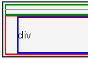

Internet Explorer (Windows) CSSバグリスト
内容物のないボックスでパディングや内容領域が設置されない(5.0)
- 2004-02-27修正。[3-818]を基に内容を整理。
症状
文字列などの内容物が存在しないボックスで、内容領域やパディング領域の高さ算出が不正。
- widthプロパティもheightプロパティも指定されておらず、かつ内容物が存在しない要素が生成するボックスが後続の要素を囲むように設置される。
- 親要素の開始タグと子要素の開始タグの間または子要素の終了タグと親要素の終了タグの間に文字列などの内容物が挟まれていないとき、親要素の上下パディングが常に0になる。
例示
<div style="border:2px solid green;"></div>
<hr>
<div style="padding:1em; border:2px solid red;">
<div style="border:2px solid blue;">div</div>
hr要素の上に緑色ボーダーのdiv要素、hr要素の下に赤色ボーダーのdiv要素があるはずです。また、赤色ボーダーのdiv要素は四方に幅1emのパディング領域があるはずです。
スクリーンショット
WinIE6.0標準モード
WinIE5.0
修正状況
- WinIE5.0で不具合の発生を確認しました。
- WinIE5.5、WinIE6.0でこの不具合は発生しないようです。